What This Is
A complete standalone tabletop roleplaying game designed from the beginning for Foundry VTT.
This is not a conversion of D&D 5e, Pathfinder, Fabula Ultima, or another existing tabletop system.
It is not a recreation of the Honkai: Star Rail videogame with dice bolted onto it.
It is a new tabletop rules engine intended to capture the things that make a character-driven space-fantasy JRPG compelling:
- Distinctive heroes with mechanically unique combat identities
- Way and Element interactions
- Shared party resources
- Weakness and Break mechanics
- Turn-order manipulation
- Ultimates that can interrupt normal action flow
- Follow-up attacks and reactions
- Summoned entities and alternate combat states
- Bosses with phase changes and encounter-specific rules
- Exploration across dramatically different worlds
- Towns and social spaces worth spending time in
- Character relationships, downtime, rivalries, friendships, and nonsense
- Missions ranging from cosmic crises to helping somebody around the corner
- A campaign structure that allows the party to continually discover new civilizations, threats, and stories
Foundry is not merely the place where the game sheet happens to be displayed.
Foundry is part of the rules engine.
The system is allowed to track calculations, event chains, timing windows, resource changes, targeting restrictions, conditional abilities, status durations, and other mechanical interactions that would become cumbersome in a purely paper game.
The computer handles bookkeeping.
The players make decisions.
The GM runs the world.
The Core Fantasy
The player should feel like they are playing their own hero in an anime space-fantasy campaign, not controlling a spreadsheet and not impersonating an existing protagonist.
A campaign should comfortably support all of the following:
- Traveling aboard a ship or other mobile home base
- Arriving at an unfamiliar world
- Wandering through a city
- Sitting around a fountain talking nonsense with the party
- Meeting NPCs
- Shopping
- Gambling
- Investigating mysteries
- Exploring ruins
- Sneaking through restricted facilities
- Getting caught
- Talking their way out
- Starting a bar fight
- Having a completely unnecessary slap fight because someone insulted a character's favorite celebrity
- Hunting monsters
- Fighting soldiers, machines, strange lifeforms, and cosmic horrors
- Saving a village
- Becoming involved in faction politics
- Developing friendships and rivalries
- Returning to the ship after a mission
- Spending downtime with companions
- Upgrading gear
- Developing new powers
- Departing for the next world
The setting must support both:
“Tonight we kill the thing threatening this planet.”
and:
“Tonight we never left town.”
Both are legitimate sessions.
Primary Design Philosophy
3.1 The Tabletop Game Comes First
This must remain a tabletop roleplaying game.
The GM adjudicates an open world.
Players may attempt things the rules did not anticipate.
NPC conversations are conversations, not dialogue trees.
Exploration is not reduced to clicking videogame hotspots.
Characters are not confined to combat abilities.
The VTT supports imagination rather than replacing it.
3.2 The Computer Handles What Computers Are Good At
Players should not manually track:
- Temporary modifier arithmetic
- Action-value calculations
- Break calculations
- Resource triggers
- Duration counters
- Trigger chains
- Repeated status damage
- Follow-up eligibility
- Reaction windows
- Summon timers
- Equipment-derived modifiers
- Conditional bonuses
- Multi-target damage distribution
- Shared resource synchronization
If Foundry knows the answer, the player should usually not have to calculate it.
3.3 The Player Makes the Interesting Decision
Automation must never eliminate meaningful choices.
The engine may say:
Netherwing can react.
It should not decide whether Netherwing reacts.
The engine may say:
Ultimate Ready.
It should not fire the Ultimate automatically.
The engine may identify valid targets.
It should not pick the player's target unless the ability itself is explicitly random.
The guiding rule is:
Automate consequences. Preserve decisions.
3.4 Every Character Should Feel Different
Characters are not bags of different numerical bonuses wrapped around the same action loop.
Every hero is expected to possess a recognizable mechanical engine.
One hero may accumulate power from party HP fluctuations.
Another may hunt a marked target.
Another may manipulate the action timeline.
Another may store damage and release it later.
Another may deploy creatures or drones.
Another may change stance.
Another may consume their own health.
Another may intercept attacks.
Another may create battlefield rules that affect everyone.
Two characters following the same Way should still be capable of playing dramatically differently.
3.5 The Interface Is Part of Character Design
A character's special mechanic should not exist only as text.
If a character accumulates a unique resource, the resource appears.
If a summon enters battle, the sheet changes.
If a stance changes, the controls change.
If an Ultimate becomes available, the interface communicates it.
If an ability creates a reaction window, the appropriate player sees it immediately.
A player should be able to glance at the screen and understand:
- Who they are
- How healthy they are
- What resources they have
- What conditions affect them
- What actions are available
- What their character is currently trying to accomplish
3.6 Visual Spectacle Without Becoming a Videogame
Combat should feel dramatically different from ordinary Foundry combat.
However, this project will not attempt to reproduce a fully animated 3D videogame.
The visual language is:
2.5D tabletop battle presentation using flat character artwork, depth, scale, motion, effects, UI animation, and perspective.
Good staging is more important than expensive animation.
Three Modes of Play
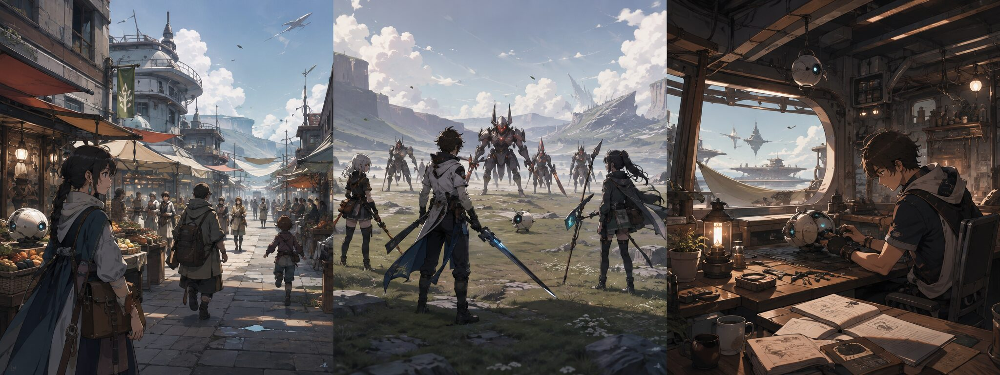
The system has three major presentation states.
4.1 Exploration / Roleplaying Mode
Used for:
- Towns
- Ships
- Wilderness
- Dungeons
- Investigation
- Social scenes
- Travel
- Downtime
- General roleplaying
The UI is deliberately lighter.
Players are encouraged to look at the world and one another rather than a combat HUD.
4.2 Combat Mode
When combat begins, the presentation changes.
The exploration interface gives way to:
- 2.5D battle tableau
- Combat timeline
- Character resources
- Party Skill Points
- Target indicators
- Action wheel
- Enemy information
- Weakness indicators
- Break bars
- Status feedback
- Reaction prompts
The transition itself should feel significant.
The machine wakes up when violence begins.
4.3 Downtime Mode
Downtime is not merely “restore everything and skip ahead.”
It supports:
- Resting
- Hanging out
- Personal projects
- Research
- Shopping
- Crafting
- Training
- Bond scenes
- Faction activity
- Ship activity
- Gambling and recreation
- Personal errands
- Medical recovery
- Character development
Downtime mechanics should encourage roleplaying without replacing roleplaying.
Player Character Structure
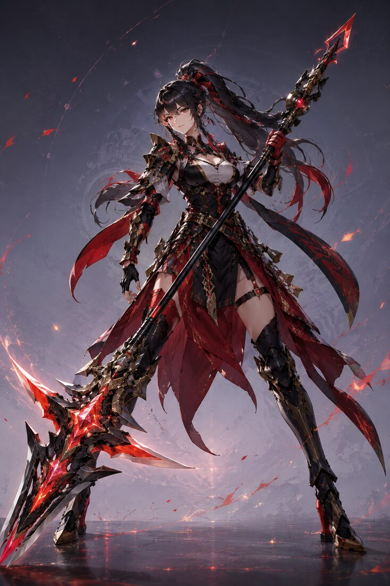
Vanguard — Physical / Fire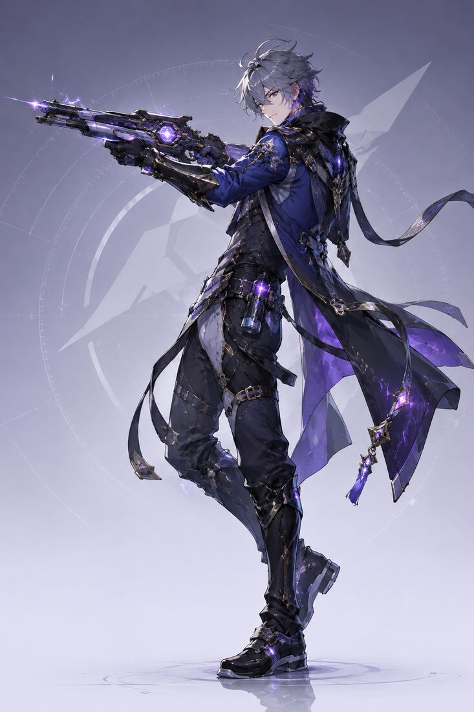
Gunner — Lightning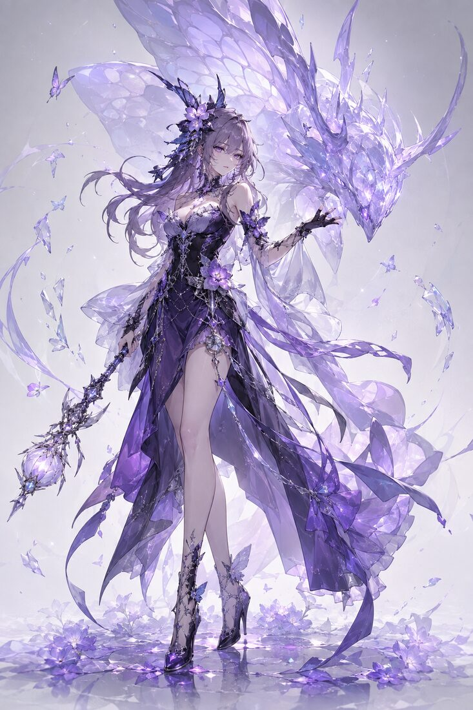
Remembrance Summoner — Quantum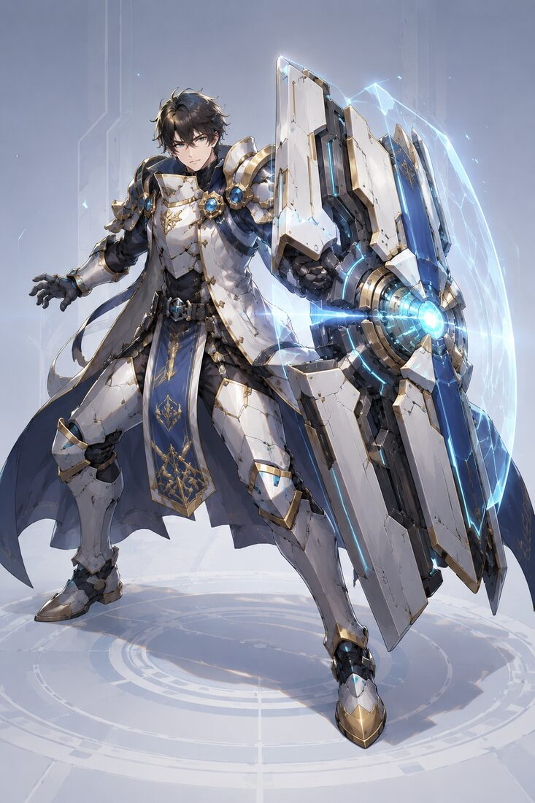
Protector — PreservationEvery player character uses a common structural vocabulary even though their individual mechanics may vary radically.
5.1 Identity
Each character contains:
- Name
- Portrait
- Level
- Way
- Element
- Origin / Homeworld
- Background
- Role descriptors
- Personal traits
- Bonds
- Faction affiliations
- Notes / biography
- Advancement state
Core Attributes
The exact mathematical implementation remains a prototype decision.
The initial design uses five broad Attributes:
| Attribute | Governs |
|---|---|
| Might | Strength, endurance, physical force |
| Agility | Coordination, reflexes, balance, stealth |
| Intellect | Reasoning, science, technology, investigation |
| Presence | Charm, intimidation, deception, social force |
| Will | Discipline, courage, supernatural resistance |
These are tabletop attributes, not videogame combat statistics.
They provide the foundation for everything characters attempt outside their bespoke combat kits.
Final values, dice, modifier ranges, and advancement costs are intentionally TBD until prototype testing.
Skills
Characters also possess general skills representing learned competence.
Initial categories may include:
- Athletics
- Acrobatics
- Engineering
- Science
- Medicine
- Investigation
- Perception
- Insight
- Negotiation
- Deception
- Intimidation
- Stealth
- Survival
- Piloting
- Technology
- Streetwise
- Culture / Lore
The final list should remain compact enough that players can remember what their character is good at.
Skills are primarily used for open-ended tabletop play.
They are not substitutes for combat powers.
Core Resolution Engine
The final dice mechanic remains an early prototype decision.
Whatever resolution system is selected must satisfy the following requirements:
- Fast resolution
- Multiple degrees of outcome
- Easy Foundry automation
- Enough mechanical hooks for Traits and powers
- Useful failure without excessive whiffing
- Clear player-facing results
- Ability to resolve opposed and environmental challenges
- Minimal arithmetic at the table
Potential outcomes should distinguish more than simple success/failure.
The system should be capable of expressing concepts such as:
- Failure
- Success with complication
- Standard success
- Strong success
- Exceptional / critical success
The final mechanic should be tested in actual play before becoming foundational.
Derived Combat Statistics
Combat statistics are derived separately from tabletop Attributes.
Potential core values include:
- HP
- Guard / Defense
- Speed
- Movement or Mobility where applicable
- Break Power
- Effect
- Resistance
- Critical capability if retained
- Healing effectiveness
- Shield strength
The goal is not to reproduce every Honkai numerical statistic.
Only statistics that create meaningful tabletop behavior should exist.
Character Combat Kit
Every character possesses a recognizable combat kit built from common interface categories.
Basic Attack
Reliable attack requiring no party Skill Point.
Usually generates a party Skill Point.
Provides a default action when conserving resources.
Skill
The character's primary tactical action.
Usually costs party Skill Points.
Skills are expected to interact strongly with the character's signature mechanic.
Ultimate
A powerful ability charged through the character's own mechanics.
Ultimates are not restricted to the character's normal turn.
When available, they may be activated during legal timing windows and inserted into the action timeline.
Talent
The character's core passive or reactive engine.
Talents frequently listen for events such as:
- Ally damaged
- Enemy damaged
- Healing
- Shield gained
- Shield broken
- Weakness broken
- Enemy defeated
- Ultimate used
- Skill used
- Status applied
- Turn beginning
- Turn ending
- Resource threshold reached
Technique
Primarily used:
- Before combat
- During exploration
- At encounter entry
- For ambushes
- For environmental manipulation
- To establish starting combat state
Techniques are intended to bridge exploration and combat.
Signature Mechanic
Many characters possess something that goes beyond the five common ability categories.
Examples:
- Summoned creature
- Personal meter
- Marks
- Stances
- Stored damage
- Ammunition
- Charges
- Companion
- Form transformation
- Deployable object
- Counter state
- Alternate action set
The system architecture must support these without character-specific spaghetti code.
Personal Resources
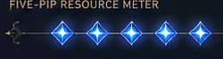
Characters may have individual resources beyond HP and Energy.
Examples include:
- Newbud
- Resolve
- Momentum
- Charges
- Memory
- Heat
- Ammunition
- Marks
- Companion Life
Resources may be:
- Numeric
- Segmented
- Binary
- Stacking
- Event-generated
- Spent
- Converted
- Shared with another actor
The character sheet displays only resources relevant to that character.
Party Skill Points
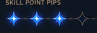
Skill Points are a shared party resource.
Example display:
● ● ○ ○ ○
Basic actions commonly generate Skill Points.
Skills commonly consume them.
Because the resource belongs to the party, it should exist primarily on the persistent party/combat HUD rather than inside any one character sheet.
All clients see the same synchronized value.
This creates cooperation without requiring conventional action-point bookkeeping.
Energy and Ultimates
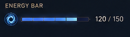
Energy accrues toward the Ultimate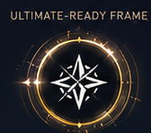
Ultimate ready — the interrupt is armedEach character may possess an Energy meter or equivalent Ultimate charge mechanic.
Energy can be generated by:
- Acting
- Taking damage
- Dealing damage
- Healing
- Character-specific Talents
- Equipment
- Ally actions
- Enemy events
When the threshold is reached:
ULTIMATE READY
The system clearly alerts the owning player.
The player may activate the Ultimate during permitted timing windows.
Combat Timeline
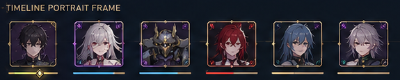
Combat does not use traditional fixed-round initiative as its primary presentation.
Characters and enemies occupy a visual action timeline.
The engine tracks:
- Current action order
- Speed
- Action advancement
- Action delay
- Extra actions
- Summon turns
- Interrupting Ultimates
- Boss insertions
- Follow-up actions
The player does not calculate timeline values manually.
When an effect alters action order, the portrait physically moves on the timeline.
Combat Presentation — 2.5D Battle Tableau
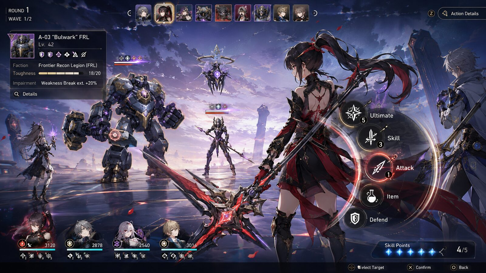
This is one of the project's defining systems.
Player Perspective
Each player client receives a composition centered around that player's own hero.
The player's character appears:
- Large
- Foreground
- Center or center-right
- Facing the enemy formation
Enemies appear primarily toward the left / middle distance.
Their apparent size and location communicate battlefield organization.
Nearby allies may appear partially off-screen and larger.
More distant allies may appear smaller.
The result creates depth without requiring actual 3D models.
Flat Character Art
Combatants use layered flat artwork.
Potential character states include:
- Idle
- Acting
- Hurt
- Ultimate
- Defeated
- Alternate stance
- Summoned state
Not every character requires every state for the initial release.
Motion is created through:
- Translation
- Scaling
- Parallax
- Sprite swaps
- Screen shake
- Impact effects
- Lighting
- Particle overlays
- UI transitions
The game should create the impression of motion without requiring expensive frame-by-frame animation.
Logical Battlefield Positioning
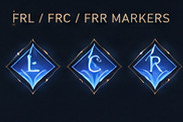
Front row — FRL / FRC / FRR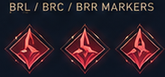
Back row — BRL / BRC / BRRThe visual battlefield is not a free-movement grid.
Combatants carry logical position data.
Enemy formation initially supports:
| Code | Position |
|---|---|
| FRL | Front Row Left |
| FRC | Front Row Center |
| FRR | Front Row Right |
| BRL | Back Row Left |
| BRC | Back Row Center |
| BRR | Back Row Right |
Internally, position should be stored separately:
row: front
lane: leftrather than relying on a single display string.
This allows rules to independently query Row and Lane.
Position Display
Position markers should not clutter normal play.
Hovering a target may show:
Murder Drone
FRL
Front Row — Left
or:
Kill Borg
BR
Back Row
Position Is Mostly State, Not Movement
Characters do not normally spend turns walking between grid squares.
Position changes occur when an ability or encounter rule makes them meaningful.
Examples:
- Pull enemy Front
- Knock enemy Back
- Swap lanes
- Expose Back Row target
- Intercept
- Push
- Advance
- Retreat
- Protect corresponding lane
This provides tactical positioning without turning the game into miniature wargaming.
Targeting Types
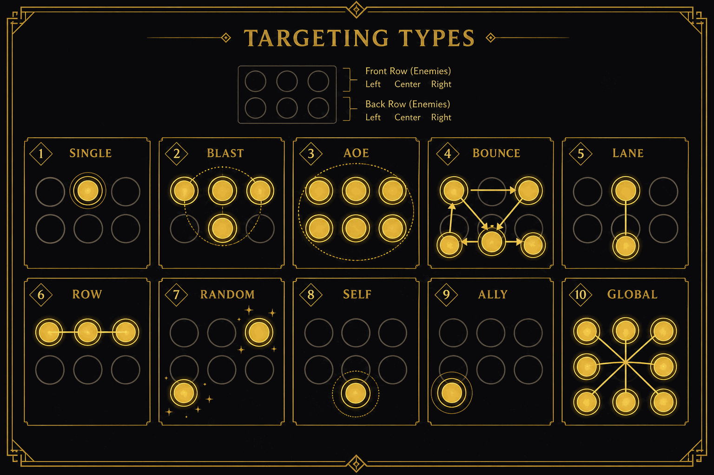
The action engine must support at least:
Single Target
One valid target.
Blast
Primary target plus adjacent targets.
Area of Effect
All legal targets within an affected group.
Bounce
Initial target selected by player; subsequent hits distributed according to ability rules.
Lane
Affects Front and/or Back units sharing a lane.
Row
Affects an entire Front or Back Row.
Random
Engine selects legal targets.
Self
Source only.
Ally
One or more friendly targets.
Global
All combatants meeting defined criteria.
Target Selection UX
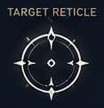
Selecting an action enters a targeting state.
Valid targets become visually obvious.
Invalid targets dim.
Hovering a target can expose:
- Name
- Position
- HP
- Toughness
- Weaknesses
- Relevant conditions
- Expected targeting pattern
- Break potential
- Important ability warnings
Example:
Murder Drone — FRL
HP: ██████░░
Toughness: ◇◇
Weakness: ⚡ ❄️
BREAK POSSIBLE
The engine does not require the player to understand why an illegal target is illegal before making the action.
It communicates legal choices directly.
Action Wheel
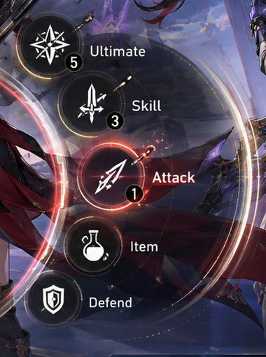
The primary combat control is a contextual radial / partial-radial action menu.
The initial wheel expands approximately from 12 o'clock through 5–6 o'clock, leaving the hero art unobscured.
Potential top-level actions:
- Attack
- Skill
- Ultimate
- Item
- Defend
- Special
- Character-specific action
Selecting a category expands its available actions.
Example:
ATTACK
→ Basic Attack
→ Skill
→ Alternate Attack
→ Character-specific option
The wheel is not identical for every character.
A summoner may expose Command.
A stance fighter may expose Stance.
A hacker may expose Hack.
A character with deployables may expose Deploy.
The action wheel belongs to the character, not merely to the rules engine.
Weakness and Toughness
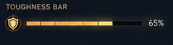
Enemies may possess:
- HP
- Toughness
- One or more elemental Weaknesses
Attacking an enemy using an appropriate Element reduces Toughness.
Foundry handles the calculation.
Players see the Toughness bar change immediately.
Example:
◇◇◇◇ → ◇◇
When Toughness reaches zero:
WEAKNESS BREAK
The engine resolves the appropriate Break effect.
Break Effects
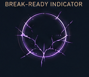
Break may cause:
- Bonus damage
- Timeline delay
- Element-specific status
- Vulnerability
- Ability interruption
- Boss mechanic disruption
- Exposure of hidden targets
- Phase interaction
Elements should differ meaningfully in how Break behaves.
Element should therefore be more than damage color.
Damage, Healing, and Shields
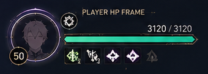
Player frame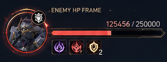
Enemy frameThe engine maintains a unified transaction pipeline.
Every HP change is an event.
Examples:
damageApplied
hpLost
healingApplied
hpRecovered
shieldApplied
shieldDamaged
shieldBroken
actorDefeatedThis distinction matters.
A character such as Castorice may care about real HP lost or restored, while another character may care specifically about Shields.
The engine must preserve enough information for both mechanics to function correctly.
Event-Driven Ability Engine
This is the central technical foundation of character design.
Actions and Talents subscribe to meaningful game events.
Potential hooks include:
onActionDeclared
onAttack
onHit
onMiss
onCritical
onDamage
onDamageTaken
onHeal
onHPChanged
onShieldGained
onShieldBroken
onStatusApplied
onStatusRemoved
onBreak
onAllyBreak
onEnemyBreak
onUltimate
onSkill
onBasic
onFollowUp
onTurnStart
onTurnEnd
onEnemyDefeated
onAllyDefeated
onSummon
onSummonDismissed
onResourceChangedCharacters should primarily be defined through data-driven actions, conditions, triggers, and effects.
New characters should not require rewriting the combat engine.
Trigger Stack / Reaction Resolver
Multiple abilities may react to the same event.
The engine therefore requires a deterministic reaction system.
Example:
Enemy attacks Ally A.
- Damage is declared.
- Defender reaction becomes available.
- Preservation ally may intercept.
- Shield response resolves.
- Damage resolves.
- HP-loss Talents detect the result.
- Healing reaction may fire.
- Resource gains resolve.
- Follow-up eligibility is checked.
The player should never see an incomprehensible technical stack.
They see only the decisions relevant to them.
Follow-Up Attacks
Follow-up attacks are first-class actions.
They may trigger when:
- An ally attacks
- An ally is damaged
- An enemy is Broken
- A marked enemy acts
- A shield is attacked
- Healing occurs
- A summon acts
- A condition is applied
- Another specific trigger occurs
Follow-ups may be:
- Automatic
- Optional
- Limited per round / cycle
- Resource-gated
The system tracks limits and eligibility.
Reactions and Interrupts
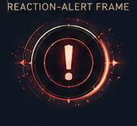
Reaction prompts appear contextually.
Example:
ALLY TARGETED
INTERVENE?
[Shield] [Counter] [Ignore]
The prompt:
- Identifies the event
- Shows the affected character
- Shows available responses
- Enforces timing
- Resolves the selected effect
- Disappears when no longer legal
Players should not need to shout over one another asking whether they can react.
Summons / Companions / Reflections
Summoned entities are first-class combat participants.
They may have:
- Their own artwork
- HP or Life
- Actions
- Timeline position
- Duration
- Resources
- Status effects
- Triggered abilities
- Relationship to summoner statistics
The engine must support summons that:
- Act independently
- Act immediately
- Share statistics with owner
- Use owner's statistics
- Have unique statistics
- Consume their own Life
- Disappear after a timer
- Transform
- Detonate
- Trigger events when entering/leaving play
Dynamic Character Sheet States
Character sheets are allowed to transform based on current mechanics.
Examples:
Netherwing Dormant
The summon panel is subdued.
Netherwing Summoned
Panel expands.
Life diamonds appear.
Summon actions become active.
Duration appears.
Relevant Castorice actions change.
Alternate Stance
Action set changes.
Transformation
Portrait, resources, actions, and available Traits may change.
Dynamic sheets are a core feature, not an optional visual gimmick.
Character Sheet
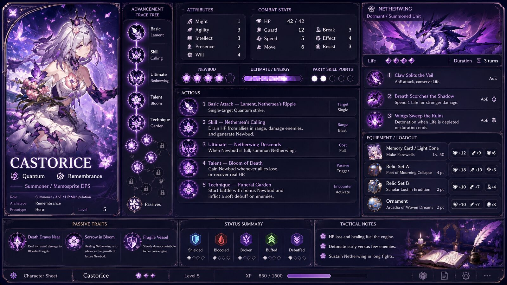
ArtLegacy terminology — this plate was generated before the Waybound Wanderers naming and still reads Path / Remembrance / Preservation. Regenerate on the next art pass.
The full character sheet remains the foundation of the tabletop character.
Primary layout:
Left — Identity
- Large character portrait
- Name
- Level
- Element
- Way
- Role
- Background / Origin
- Advancement spine
Center — Character Engine
- Attributes
- Combat statistics
- HP
- Personal resource
- Energy
- Conditions
- Actions
- Talents
Right — Active Systems
- Summon / alternate state
- Equipment
- Relics
- Memory / Light Cone equivalent
- Contextual character mechanic
Bottom / Secondary Panels
- Traits
- Skills
- Bonds
- Statuses
- Notes
- Biography
- Inventory
- Advancement information
The entire sheet should allow a player to understand the character without navigating five databases.
Advancement / Skill Tree
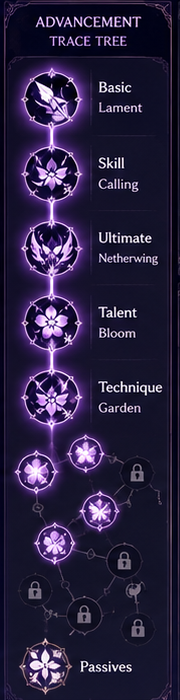
Advancement should be visible.
The sheet includes an interactive progression spine / tree.
Possible categories:
- Basic
- Skill
- Ultimate
- Talent
- Technique
- Signature mechanic
- Major Traits
- Minor Traits
- Attribute improvements
Nodes visibly change when purchased.
Whenever possible, advancement should create new behavior, not merely increase percentages.
Bad advancement:
Damage +3%.
Better advancement:
The first time you Break an enemy each encounter, immediately Advance 15 on the timeline.
Progression should make the character more interesting, not just numerically larger.
Character Creation
The game is built around original player characters.
Canon characters may exist in the world, but PCs are not expected to play them.
Character creation must eventually support:
- Concept
- Origin / Homeworld
- Way
- Element
- Attributes
- Skills
- Background Traits
- Combat kit
- Signature mechanic
- Starting advancement
- Equipment
- Bonds / connections
- Portrait and visual identity
The difficult design problem is allowing bespoke-feeling characters without requiring players to program their own Foundry actors.
This will require a structured Hero Builder.
Way
Way defines broad philosophy and mechanical tendencies.
Way is not a rigid class.
It may influence:
- Available Talents
- Advancement options
- Signature-engine families
- Ultimate styles
- Combat role
- Equipment interaction
Two characters of the same Way should not be assumed to have the same rotation.
Element
Elements interact strongly with:
- Weakness
- Toughness
- Break
- Conditions
- Talents
- Enemy types
- Equipment
Initial elemental framework:
- Physical
- Fire
- Ice
- Lightning
- Wind
- Quantum
- Imaginary
Element must influence actual tactical behavior rather than merely changing damage color.
Hero Builder
Because bespoke characters are a central appeal, the system requires a player-facing kit construction system.
The builder should provide controlled components for:
- Basic Attack
- Skill
- Ultimate
- Talent
- Technique
- Personal resource
- Trigger
- Targeting pattern
- Costs
- Effects
- Advancement branches
Way and Element constrain available combinations sufficiently to protect balance and identity.
The player creates a distinctive hero without writing formulas or code.
An advanced GM mode may permit unrestricted custom powers.
Traits
Traits define who a character is beyond combat.
Examples:
- Street Rat
- IPC Insider
- Mechanic
- Former Soldier
- Noble
- Wanted Criminal
- Academic
- Pathstrider
- Synthetic Life
- Nameless
- Medical Training
- Underworld Contacts
Traits may:
- Grant narrative permissions
- Improve checks
- Provide contacts
- Reveal information
- Alter downtime
- Create special options
- Occasionally interact with combat
Traits should encourage players to describe why their character can do something.
Bonds
Characters may form Bonds with:
- Other PCs
- Important NPCs
- Organizations
- Communities
Bonds are intentionally light.
They are not numerical dating-simulator meters.
A Bond represents a relationship that has become mechanically meaningful.
Examples:
We've Got Each Other's Back
Once per mission, intervene when the bonded character fails an appropriate check.
Professional Rivals
Gain a benefit when attempting to outdo one another.
Old Friends
Gain additional recovery or information during downtime together.
Players decide whether a relationship is:
- Friendship
- Romance
- Rivalry
- Family
- Mentorship
- Professional partnership
- Something stranger
Informal Conflict
Not every disagreement requires tactical combat.
The system should support fast contests for:
- Arguments
- Races
- Gambling
- Drinking competitions
- Sparring
- Slap fights
- Bar fights
- Sports
- Showing off
Example:
CONFLICT
[Argument] [Contest] [Brawl] [Duel]
These use normal tabletop Attributes and Skills.
A fountain slap fight should not require bringing up the boss-combat timeline unless somebody escalates matters dramatically.
Equipment
Equipment should create meaningful choices without recreating videogame substat hell.
Potential categories:
- Weapon / focus
- Memory / Light Cone equivalent
- Relics
- Ornament
- Utility gear
- Consumables
Equipment may:
- Alter stats
- Modify abilities
- Add triggers
- Change targeting
- Modify resource generation
- Interact with Break
- Provide exploration utility
Avoid endless tiny percentage bonuses.
Status Effects
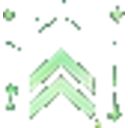
Buffed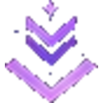
Debuffed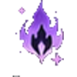
Damage over TimeStatuses are centrally managed.
Initial categories include:
- Buffs
- Debuffs
- Damage-over-time
- Control
- Shields
- Marks
- Broken
- Bloodied
- Character-specific states
Statuses display:
- Icon
- Name
- Source
- Duration
- Stacks where applicable
- Mechanical effect on hover
The system handles expiration automatically.
Enemy Architecture
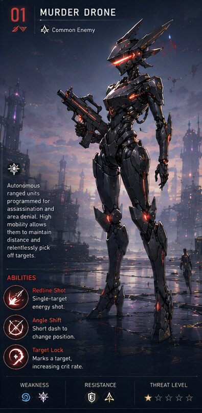
Murder Drone — Common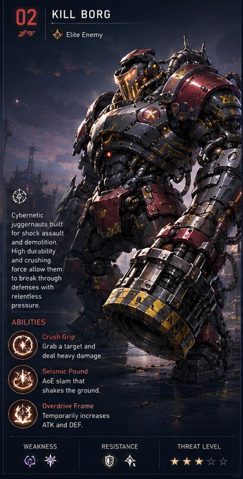
Kill Borg — Elite, Front Row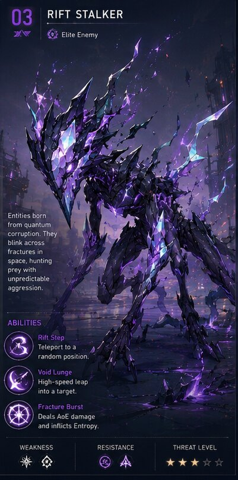
Rift Stalker — Elite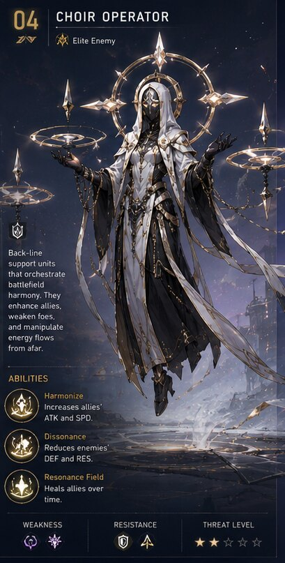
Choir Operator — Elite, Back RowEnemies should not be built as miniature player characters.
They require enough complexity to create tactical problems without overburdening the GM.
Enemy categories may include:
- Minion
- Standard
- Specialist
- Elite
- Commander
- Boss
- Summon
- Hazard / Object
Enemy data may contain:
- HP
- Toughness
- Weakness
- Position
- Speed
- Defense
- Actions
- Traits
- Reactions
- Phase rules
- Targeting priorities where necessary
Enemy Information UI
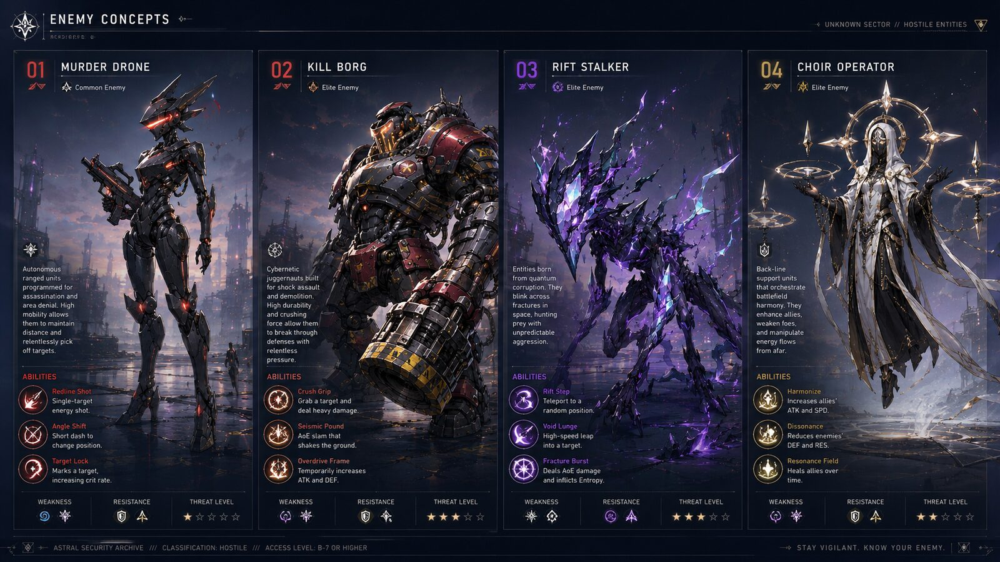
Players should obtain relevant information through hover and inspection rather than opening NPC sheets.
Example:
MURDER DRONE
FRL
HP ███████░
Toughness ◇◇◇
Weakness ⚡ ❄️
ARMOR PLATING
Hovering Armor Plating explains what it does if the players have discovered that information.
GMs retain a deeper enemy control card.
Boss Engine
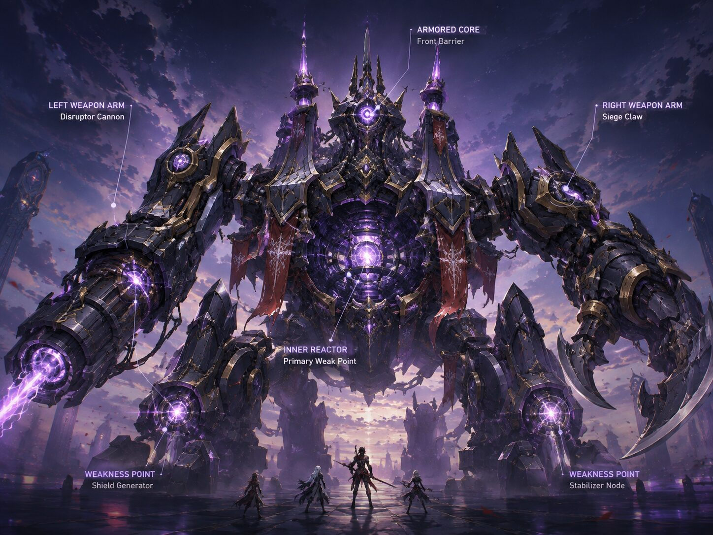
Bosses must be one of the system's showcases.
A boss is not simply an enemy with more HP.
Boss support includes:
- Multiple phases
- Changing Weaknesses
- Break-dependent mechanics
- Summoned components
- Targetable body parts
- Hidden / exposed targets
- Timeline insertions
- Interrupt actions
- Arena states
- Enrage states
- Reactive powers
- Formation changes
- Phase-specific artwork
- Phase-specific action sets
Example:
SIEGE AUTOMATON
Front:
ARM — CORE — ARM
Back:
REACTOR
The Reactor cannot initially be targeted.
Breaking the Core triggers:
REACTOR EXPOSED
BRC → FRC
The battlefield UI changes automatically.
Boss Phase Presentation
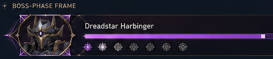
Major transitions should be theatrical.
Possible effects:
- Screen darkening
- New portrait
- Music change
- Timeline restructuring
- Status purge
- New Break bar
- New Weakness icons
- New background
- Camera shake
- Title overlay
- Voice / sound cue if assets exist
The rules and presentation happen together.
GM Combat Tools
The GM requires a centralized battle-control interface.
Potential functions:
- Add enemy
- Assign formation position
- Change position
- Adjust HP
- Adjust Toughness
- Apply status
- Modify timeline
- Trigger phase
- Trigger enemy action
- Add summon
- Change Weakness
- Set hidden/revealed state
- Override targeting
- Undo most recent mechanical transaction
- End encounter
The GM should not need to open six NPC sheets to run six enemies.
Encounter Builder
The GM can construct encounters through a dedicated interface.
Features:
- Enemy browser
- Drag/add combatants
- Formation preview
- FR/BR assignment
- Weakness overview
- Difficulty estimate
- Boss designation
- Reinforcement groups
- Encounter notes
- Background selection
- Music selection
- Saved encounter templates
A GM should be able to build an ordinary encounter in minutes.
Battle Stage Composer
The GM selects or constructs the visual battlefield separately from its logical formation.
The Stage Composer controls:
- Background
- Foreground overlays
- Enemy visual anchors
- Scaling
- Depth planes
- Atmospheric effects
- Lighting tint
- Battle music
- Entry animation
- Optional environmental objects
Logical combat remains:
row + lane
Visual composition remains:
screen position + scale + depth
The two are related but not identical.
Per-Player Battle View
Each client can render the battle from a slightly different perspective.
The local player's hero remains foregrounded.
The acting character may temporarily receive visual focus during attacks.
The GM may use a neutral/director view.
This should be calculated locally wherever possible to reduce synchronization complexity.
Mechanical state remains authoritative and shared.
Presentation may differ by client.
Exploration System
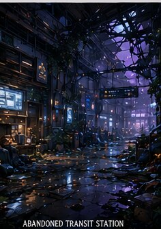
Outside combat the system supports two major exploration styles.
Theater-of-the-Mind Locations
Used for:
- Cities
- Shops
- Taverns
- Ship interiors
- Social spaces
- Small narrative locations
A location can have:
- Background artwork
- Name
- Description
- Present NPCs
- Clickable exits
- Points of interest
- Notes
- Available activities
Exploration Maps
Used for:
- Ruins
- Wilderness
- Facilities
- Dungeons
- Complex missions
These may use:
- Simple maps
- Zones
- Rooms
- Nodes
- Connected locations
Precise tactical movement is not required unless an encounter explicitly needs it.
Location Network
Locations may form a simple graph.
Example:
Central Plaza
|
Market ----- Workshop
|
Transit Station
|
Old DistrictMovement is about where you are, not how many five-foot squares you traveled.
Locations can store:
- Connections
- Encounter state
- NPC presence
- Discovered information
- Active missions
- Environmental conditions
Combat Transition
When hostilities begin:
- Exploration UI recedes.
- Combatants are identified.
- Battle Stage loads.
- Enemy formation initializes.
- Character art enters.
- Timeline appears.
- Skill Point pool appears.
- Weakness/Toughness data activates.
- Opening Techniques resolve.
- Combat begins.
When combat ends:
- Rewards resolve.
- Temporary combat states clean up.
- Summons dismiss as appropriate.
- Exploration state returns.
- Persistent consequences remain.
Towns and Hubs
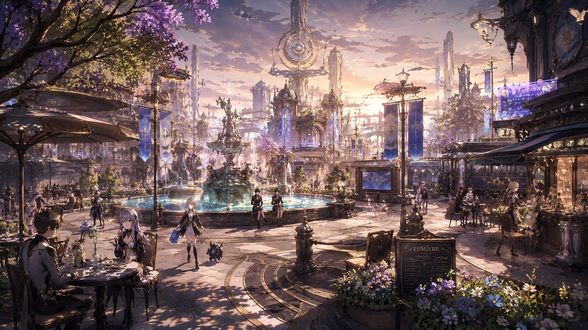
Settlements are expected to be real campaign locations rather than menus between missions.
A hub may contain:
- Inn / residence
- Market
- Food
- Shops
- Medical services
- Workshop
- Faction offices
- Entertainment
- Recreation
- NPC hangouts
- Mission sources
- Secrets
- Local events
Nothing prevents the party from spending an entire session in one.
Home Base / Ship
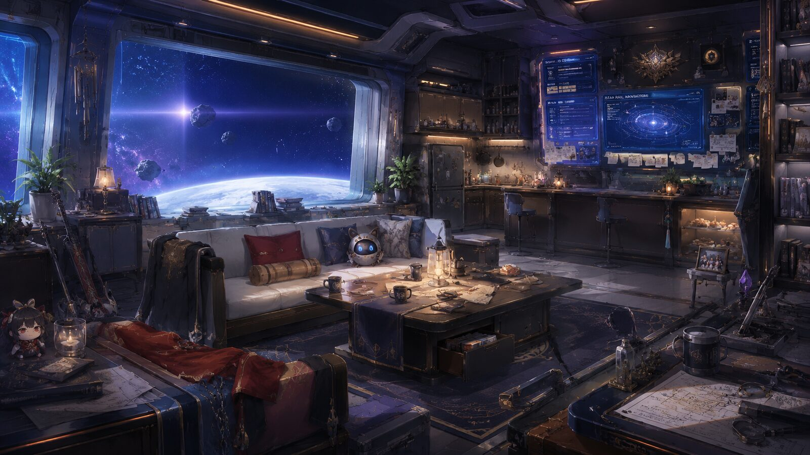
Long-term campaigns benefit from a persistent mobile or stationary home base.
The base may support:
- Character quarters
- Shared storage
- Workshop
- Medical area
- Research
- Mission board
- NPC companions
- Trophy / memory display
- Travel interface
- Group resources
- Downtime activities
The exact campaign premise does not require every party to belong to a faction.
Missions
The GM can track structured missions without forcing players into videogame quest logs.
Mission data may include:
- Title
- Employer / source
- Objective
- Optional objectives
- Known location
- Rewards
- Important NPCs
- Current status
- Notes
Players can see what their characters know.
GM information remains separate.
Campaign Structure
The natural long-form campaign loop is:
ARRIVE
Discover a new world or location.
LIVE
Meet people, explore, socialize, establish interests.
DISCOVER
Find conflicts, mysteries, factions, opportunities.
CHOOSE
Decide what actually matters to the party.
ADVENTURE
Investigate, travel, infiltrate, negotiate, explore.
FIGHT
Enter tactical combat when violence matters.
CHANGE
Leave consequences behind.
RECOVER
Return to town or ship.
DOWNTIME
Develop characters, relationships, equipment, projects.
DEPART
Travel onward.
The campaign can repeat this loop indefinitely without requiring every arc to resemble the previous one.
WHY DO YOU WANDER?
Answer this at your own table.
World Creation Tools
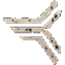
Transit Authority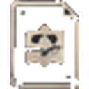
Mission BoardThe setting should make original worlds easy to create.
A GM world generator may eventually produce prompts for:
- Civilization
- Technology level
- Dominant Way influence
- Environment
- Current crisis
- Major faction
- Hidden truth
- Local custom
- Important location
- Major threat
- Strange phenomenon
- Reason the party becomes involved
The generator creates inspiration, not final prose.
Canon and Player Importance
A critical campaign rule:
The setting may contain famous characters. The campaign belongs to the PCs.
Existing heroes may:
- Appear
- Give information
- Become contacts
- Become rivals
- Request assistance
- Complicate situations
- Participate in the world
They should not routinely arrive and solve the PCs' adventure.
The players are not tourists.
Character Death and Defeat
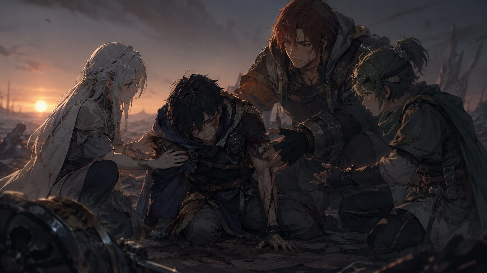
Exact death rules remain a prototype decision.
The system must distinguish:
- Knocked out
- Defeated
- Critically injured
- Dead
Because this is a campaign RPG rather than a short tactical videogame, defeat should carry consequences without making character death arbitrary.
Final implementation requires playtesting.
Inventory and Consumables
Inventory should remain visually clear.
Avoid inventory Tetris.
Potential categories:
- Equipped
- Carried
- Consumable
- Mission
- Valuable
- Personal
The system may automatically enforce only restrictions that contribute meaningfully to play.
Party HUD
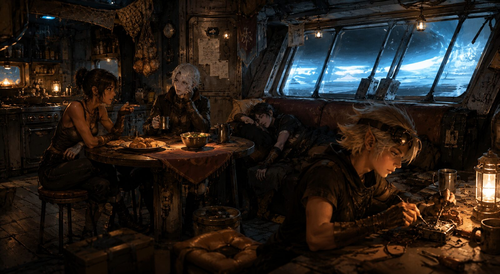
A persistent lightweight party HUD may display:
- Party Skill Points
- Combat state
- Current timeline
- Major shared effects
- Mission summary
- Relevant group resource
It must not become permanent screen clutter.
Audio and Visual Feedback
Important game events should have clear feedback.
Examples:
- Resource gained
- Resource full
- Ultimate ready
- Weakness hit
- Break
- Critical
- Shield broken
- Follow-up available
- Reaction available
- Summon entry
- Summon death
- Boss phase
- Character defeated
Feedback may use:
- Sound
- Glow
- Pulse
- Shake
- Floating number
- Icon burst
- Timeline movement
- Character-art movement
Every effect should communicate state, not merely decorate the screen.
Accessibility and Presentation Options
Players must be able to reduce spectacle.
Options should eventually include:
- Screen shake off
- Reduced motion
- Reduced particles
- Animation speed
- Sound volume categories
- High-contrast targeting
- Larger text
- Color-independent status indicators
Mechanical information cannot rely solely on color.
Technical Architecture
Foundry Target
Initial development target:
Foundry VTT v14+
Architecture should avoid unnecessary dependence on third-party modules.
Core Actor Types
Initial data model should support:
- Player Character
- NPC
- Enemy
- Boss
- Summon / Companion
- Vehicle / Ship if required
- GM Tool actor or Application where useful
Actor types should remain intentionally small.
Differences should preferably come from data and components rather than dozens of subclasses.
Data-Driven Ability Schema
Every ability should share a common definition model wherever practical.
Example conceptual structure:
Ability
id
name
type
icon
description
cost
resource
timing
trigger
target
faction
row
lane
count
pattern
effects[]
damage
healing
shield
status
movement
resource
timeline
summon
conditions[]
presentation
animation
sound
colorThe exact schema will evolve.
The architectural goal: Abilities are data interpreted by shared pipelines.
Unified Effect Pipeline
Actions resolve through a shared engine.
Conceptually:
Declare
→ Validate
→ Pay Cost
→ Select Targets
→ Open Reactions
→ Resolve Check
→ Calculate Effects
→ Apply Damage/Healing
→ Modify Toughness
→ Apply Status
→ Publish Events
→ Resolve Follow-Ups
→ Update Timeline
→ Play Presentation
→ CleanupSpecial powers should hook into this pipeline rather than bypassing it whenever possible.
Transaction Logging
Mechanical operations should be recorded as transactions.
A transaction may contain:
- Source
- Ability
- Targets
- Costs
- Rolls
- HP changes
- Toughness changes
- Status changes
- Resource changes
- Timeline changes
- Summons
- Triggered follow-ups
This supports:
- Debugging
- Chat summaries
- GM inspection
- Potential Undo
- Regression testing
GM Undo
Where technically safe, the GM should be able to reverse the most recent mechanical transaction.
Especially useful for:
- Accidental target
- Wrong damage
- Mistaken Skill usage
- Bad status application
- Misclick
- Wrong resource cost
Complex narrative state is not expected to be universally undoable.
Cross-Client Synchronization
Authoritative mechanical state must remain synchronized.
Examples:
- HP
- Toughness
- Resources
- Timeline
- Skill Points
- Summons
- Statuses
- Formation
Purely cosmetic presentation should be allowed to run locally.
Avoid network traffic for effects that do not require shared authority.
Character Extension Layer
Some heroes will require interface behavior no generic schema anticipated.
The architecture therefore needs controlled extension points for:
- Character-specific UI
- Custom meters
- Alternate action wheels
- Summon panels
- Transformation states
- Target overlays
- Special reaction windows
These extensions should build on shared rules services rather than replacing them.
GM Authoring Tools
Long-term GM tools should support authoring without requiring code.
Potential editors:
- Custom Enemy
- Custom Boss
- Custom Ability
- Custom Trait
- Custom Equipment
- Custom Status
- Custom Encounter
- Custom Location
- Custom World
A GM should be able to create campaign content at the table.
Compendiums
Core installation should eventually include:
- Traits
- Skills
- Equipment
- Consumables
- Status effects
- Enemies
- Boss templates
- Locations
- GM reference
- Sample characters
- Sample adventure
However, common material should surface contextually through the appropriate interface.
Players should not spend the session browsing compendium folders.
Character Creation UX
Character creation should be guided.
Desired flow:
Concept
Origin
Way
Element
Attributes
Skills
Traits
Combat Engine
Basic
Skill
Ultimate
Talent
Technique
Equipment
Review
READY TO PLAY
A new player should not need to understand the entire rules engine before making a viable character.
Onboarding
The finished system requires:
- Player tutorial
- GM tutorial
- First-combat walkthrough
- Tooltips
- Contextual help
- Character creation guide
- Rules reference
- Sample characters
- Sample encounter
- Sample mission
The first experience matters as much as feature count.
Initial Vertical Slice
Before building the entire game, one vertical slice proves the core concept.
Content
- 4 complete heroes
- 1 town / hub
- 1 exploration location
- 1 short mission
- 6–10 standard enemy types
- 2 elites
- 1 serious multi-phase boss
- Small equipment set
- Small trait/skill set
Systems
The slice must prove:
- Character sheet
- Core resolution
- Action wheel
- 2.5D battle stage
- Timeline
- Skill Points
- Energy
- Basic / Skill / Ultimate
- Weakness
- Toughness
- Break
- Statuses
- Follow-ups
- Reactions
- Summons
- Enemy formations
- Boss phases
- Exploration
- Social checks
- Downtime
- Bonds
- Advancement
- GM encounter controls
The vertical slice is considered successful only when a real group can play:
town → roleplay → investigation → exploration → combat → boss → return to town
without developer intervention.
Prototype Characters
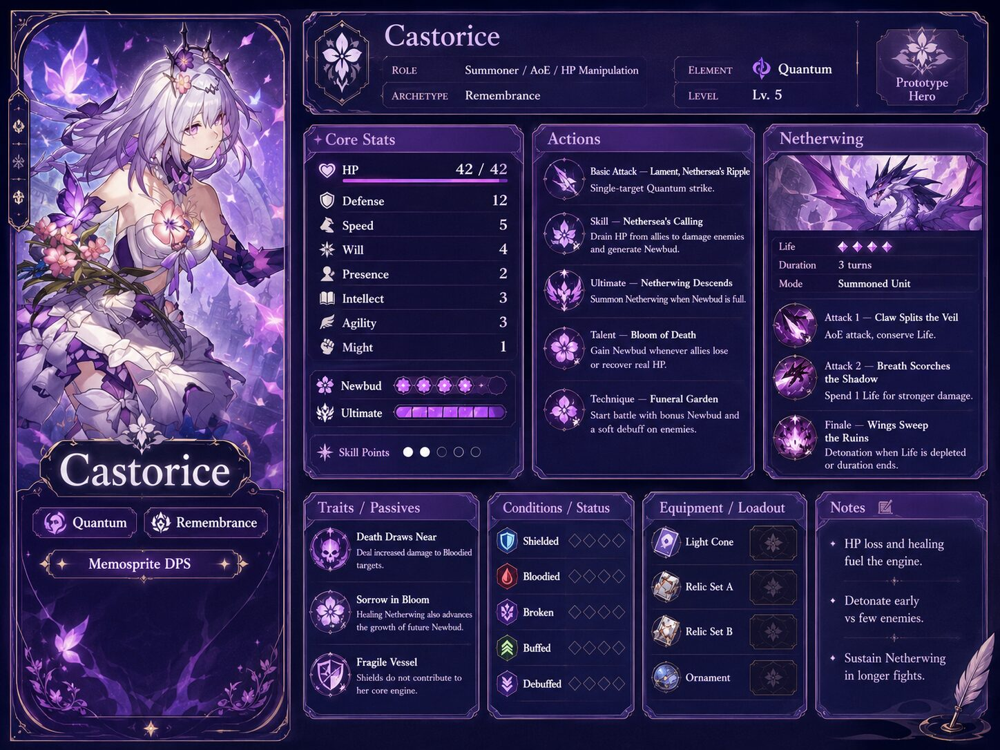
ArtLegacy terminology — this plate was generated before the Waybound Wanderers naming and still reads Path / Remembrance / Preservation. Regenerate on the next art pass.
The first four heroes should deliberately stress different parts of the engine.
Hero A — Summoner / HP Engine
Tests:
- HP event listening
- Healing interaction
- Personal resource
- Summon
- Summon Life
- Summon timeline
- Detonation
- Dynamic sheet
Castorice is the current reference model for this test.
Hero B — Timeline Manipulator
Tests:
- Advance
- Delay
- Extra action
- Ally manipulation
- Ultimate interrupts
Hero C — Reaction / Protection Character
Tests:
- Interception
- Shields
- Reaction prompts
- Cross-actor effects
- Conditional targeting
Hero D — Break / Follow-Up Character
Tests:
- Weakness
- Toughness
- Break triggers
- Follow-up attacks
- Marks
- Event chains
If these four feel radically different while using the same engine, the architecture works.
Initial Boss Prototype
The first boss should exercise:
- Multiple formation positions
- Front/Back targeting
- Targetable components
- Weakness
- Toughness
- Break
- Phase transition
- Timeline manipulation
- Reaction
- Summon/reinforcement
- Exposed weak point
The boss should be complex enough to expose architectural weaknesses early.
Release Content Target
Final 1.0 content numbers should remain flexible until the vertical slice proves production cost.
A reasonable target direction is:
- All core playable Ways intended for launch
- All core Elements
- Complete Hero Builder
- Large Trait library
- Complete general Skill list
- Broad equipment library
- Diverse bestiary
- Multiple elite archetypes
- Multiple full bosses
- One substantial starter region/world
- One hub
- One complete introductory adventure/campaign arc
- GM world-building tools
- Full tutorials and documentation
Engine completeness outranks raw content count.
Twenty excellent enemies with meaningful mechanics are worth more than 150 stat blocks that differ only by HP.
Development Methodology
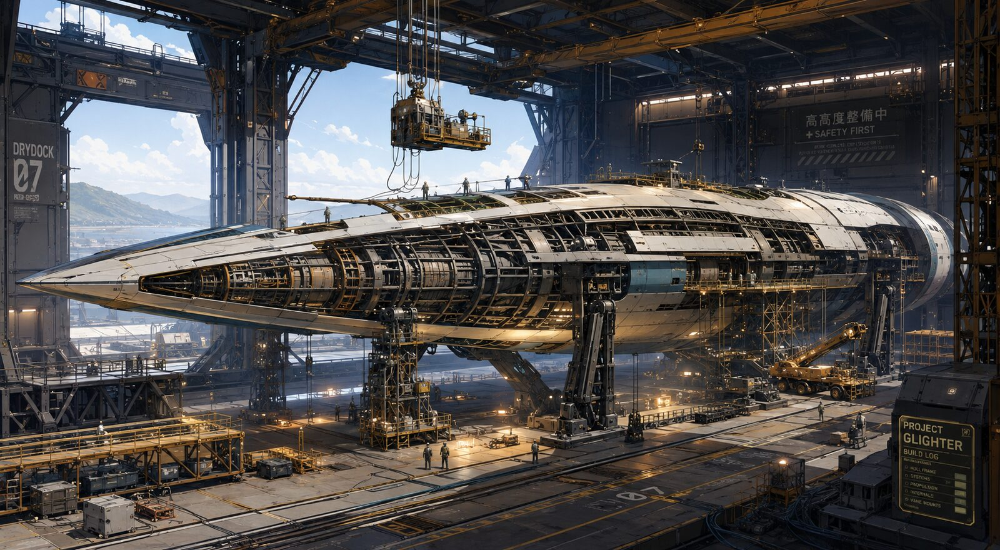
Every major system is developed through explicit phases.
Full Plan First
Before a large feature begins:
- Define desired player experience
- Define data required
- Define affected systems
- Break implementation into phases
- Identify likely integration risks
- Establish test cases
One Phase at a Time
Do not build the battle renderer, timeline, Break engine, reaction engine, and character resources simultaneously.
Each feature earns its way into the system.
Layered Testing
Layer 1 — Feature Test
Does the thing itself work?
Layer 2 — Integration Test
Does it still work when interacting with every neighboring system?
Layer 3 — End-to-End Test
Can the entire intended sequence execute correctly?
Layer 4 — Live Play
Does any of this actually feel good with four human beings trying to break it?
A feature is not finished because it works in an isolated developer test.
Testing Priorities
Critical regression chains include:
Action
Action selected
→ cost paid
→ target validated
→ roll resolved
→ damage applied
→ Break applied
→ trigger emitted
→ reactions resolved
→ resources updated
→ timeline updated
Healing
Heal selected
→ valid target
→ HP restored
→ overheal rejected where appropriate
→ HP-change event emitted
→ Talents react
→ resources update
Summon
Resource full
→ summon available
→ actor created/activated
→ timeline entry
→ linked stats correct
→ summon acts
→ summon loses Life
→ summon expires
→ dismissal triggers
→ owner UI returns to normal
Boss Phase
Trigger reached
→ old actions disabled
→ statuses handled
→ art changes
→ Weakness changes
→ formation changes
→ timeline changes
→ new actions enabled
→ clients synchronize
These pipelines should eventually have automated tests wherever possible.
Development Documents
Maintain:
SCOPE_DOCUMENT.md
This document.
Describes what the product is and what belongs inside it.
NEXT_COMMIT.md
Working development log / release staging.
Per-Feature Roadmaps
Used while implementing major systems.
Each records:
- Phases
- Expected behavior
- Tests
- Bugs
- Integration findings
- Live-play findings
RULES_DECISIONS.md
Recommended addition for an original game.
Records why fundamental mechanical decisions were made.
Examples:
- Why this dice engine?
- Why five Attributes?
- Why six enemy formation positions?
- Why this Skill Point cap?
- Why this Break formula?
This prevents future redesign from forgetting the reason behind old decisions.
Major Development Tracks
Track A — Foundation
- Foundry system skeleton
- Data schema
- Settings
- actor types
- item types
- base applications
- event services
Track B — Character Sheet
- Identity
- attributes
- derived stats
- skills
- traits
- resources
- actions
- advancement
- dynamic state panels
Track C — Core Resolution
- dice
- checks
- degrees of success
- modifiers
- opposed checks
- chat results
Track D — Combat Engine
- combat state
- timeline
- actions
- targeting
- damage
- healing
- shields
- statuses
Track E — Battle Stage
- 2.5D renderer
- character composition
- depth
- hover UI
- action wheel
- transitions
- VFX
Track F — Weakness / Break
- Elements
- Weakness
- Toughness
- Break effects
- boss interaction
Track G — Trigger Engine
- event bus
- Talents
- reactions
- follow-ups
- priority
- limits
- cleanup
Track H — Summons
- summon actors
- ownership
- stats
- actions
- timeline
- duration
- dismissal
Track I — Enemies
- enemy schema
- actions
- formation
- AI assistance if useful
- GM control cards
- bestiary
Track J — Bosses
- components
- phases
- scripted encounter state
- cinematic transitions
Track K — Exploration
- locations
- maps
- nodes
- travel
- scene transitions
Track L — Social / Downtime
- Bonds
- contests
- activities
- recovery
- projects
Track M — Character Creation
- Origin
- Way
- Element
- attributes
- skills
- Traits
- Hero Builder
- validation
Track N — Advancement
- XP
- levels
- Skill tree
- unlocks
- respec rules if desired
Track O — Equipment
- gear
- relics
- memory/light-cone equivalent
- consumables
- custom authoring
Track P — GM Tools
- encounter builder
- stage composer
- world/location tools
- custom content
- transaction inspector
Track Q — Content
- heroes
- enemies
- bosses
- equipment
- hub
- first adventure
Track R — Onboarding
- tutorials
- guides
- tooltips
- first-session flow
Track S — Polish
- animation
- sound
- accessibility
- performance
- packaging
- regression QA
Milestone 1 — Mechanical Sandbox
Goal:
Prove the rules underneath the spectacle.
Required:
- One character
- One enemy
- Dice/check system
- HP
- actions
- timeline
- Skill Points
- Weakness
- Toughness
- Break
No elaborate art required.
Milestone 2 — Combat Vertical Slice
Goal:
Prove the battle presentation.
Required:
- Four heroes
- Several enemies
- 2.5D stage
- Action wheel
- Targeting
- reactions
- follow-ups
- summon
- boss
- dynamic character UI
At this point combat should already feel like its own game.
Milestone 3 — Tabletop Vertical Slice
Goal:
Prove this is an RPG rather than a battle simulator.
Required:
- Town
- NPCs
- Skills
- Traits
- Exploration
- Investigation
- Bonds
- Downtime
- Mission
- Combat
- Return to hub
One group runs a complete session.
Milestone 4 — Character Creation Alpha
Goal:
Players stop selecting developer-built heroes and begin making their own.
Required:
- Way framework
- Elements
- Origin
- Attributes
- Skills
- Traits
- Hero Builder
- Advancement
- Equipment
Milestone 5 — GM Alpha
Goal:
A GM other than the developer can build and run content.
Required:
- Bestiary
- Encounter Builder
- Stage Composer
- Custom enemies
- Boss tooling
- Location tooling
- Mission tracking
- Rules reference
Milestone 6 — Closed Beta
Goal:
Strangers can install it and play it without developer assistance.
Requirements:
- Installer
- Manifest
- Content packs
- Starter adventure
- Tutorial
- Documentation
- Stable migrations
- Error handling
- Performance testing
- Regression suite
Milestone 7 — 1.0
The game is 1.0 when:
- Complete characters can be created
- A campaign can be run indefinitely
- Combat supports the intended tactical engine
- Exploration works
- Social play works
- Downtime works
- Advancement works
- GM content can be created
- New characters can be added without combat-engine rewrites
- New enemies can be created without code
- Bosses can meaningfully alter encounter rules
- The starter content demonstrates every major mode
- New players can install, learn, create characters, and play without developer intervention
1.0 is defined by completeness of experience, not code volume.
Explicit Non-Goals
The project is not intended to become:
- A 5e conversion
- A generic d20 game
- A reskinned existing RPG
- A grid-heavy tactical miniature game
- A fully 3D videogame
- An MMO interface
- A gacha simulator
- A collectible-character monetization system
- A dialogue-tree RPG
- A perfect simulation of the Honkai videogame
- A collection of static Foundry character sheets
- A system requiring players to memorize hundreds of modifiers
- A system where automation makes tactical decisions for the player
- A system where canon heroes routinely overshadow PCs
Things Deliberately Not Locked Yet
The following require prototype and live-play testing before being finalized:
- Exact dice mechanic
- Attribute numeric range
- Skill numeric range
- Damage scale
- HP scale
- Defense formula
- Critical rules
- Speed / timeline mathematics
- Maximum Skill Points
- Energy formulas
- Toughness scale
- Break formulas
- Death rules
- Advancement costs
- Level cap
- Equipment balance
- Exact Way construction rules
- Hero Builder restrictions
- Exact number of launch content pieces
The scope defines what these systems must accomplish, not arbitrary numbers before testing.
Success Criteria
The project succeeds if a session can produce this experience:
The players begin aboard their ship.
They arrive at a new world.
They wander into town.
They spend half an hour arguing with a shopkeeper.
One character gets into trouble at the fountain.
Another discovers an actual lead.
They investigate.
The GM never needs a tactical grid.
The party enters an abandoned facility.
Something attacks.
The screen changes.
Their heroes step into the foreground.
Enemies settle into Front and Back positions.
The timeline lights.
The action wheel opens.
A player spends the party's last Skill Point.
Another realizes they now have to Basic Attack to restore one.
An enemy prepares a devastating move.
The party desperately Breaks it before its timeline marker arrives.
Someone's Ultimate becomes ready.
They interrupt.
A summon enters the fight.
A reaction triggers.
The boss changes phase.
The players win because of decisions they made, not because the computer played for them.
The battle UI fades.
They return to town.
The character who started the fountain fight is still wet.
The party spends the remaining hour roleplaying.
That is the target experience.
The Fundamental Rule
Every major feature should be judged against one question:
Does this make the people at the table feel more like they are living an adventure together?
If automation removes bookkeeping, keep it.
If presentation communicates what is happening, keep it.
If a mechanic creates a meaningful decision, keep it.
If a rule exists only because another RPG traditionally has that rule, question it.
If a videogame mechanic becomes tedious when transferred to tabletop, redesign it.
If something is visually impressive but slows the game without adding meaning, remove it.
If Foundry can make an impossible paper mechanic effortless and understandable, exploit that advantage mercilessly.
Project Statement
This project exists to build a type of tabletop RPG that rarely gets attempted:
a campaign-scale roleplaying game whose tabletop rules, user interface, combat presentation, automation, character design, and GM tools are conceived as one system rather than separate products.
The goal is not to make Foundry imitate a videogame.
The goal is to ask what a tabletop RPG can become when it knows from its first line of design that a computer is sitting beneath the table.
Players still talk.
Players still improvise.
Players still make characters.
Players still surprise the GM.
Players still decide what matters.
Players still roll dice.
The machine simply handles the parts that were never fun to do by hand.
The world belongs to the table.
The rules support it.
Foundry makes it move.
Appendix — Art Reference Sheets
The master sheets these assets were cut from. Every icon and UI element on this page is lifted from the icon & UI master at native resolution.
ArtLegacy terminology — this plate was generated before the Waybound Wanderers naming and still reads Path / Remembrance / Preservation. Regenerate on the next art pass. Applies to every reference sheet below.
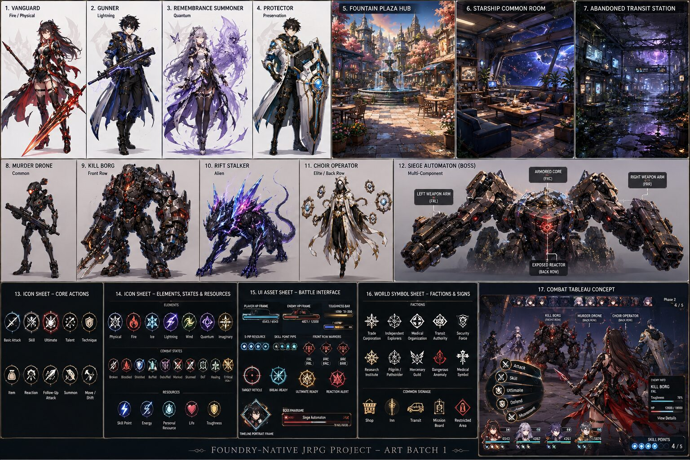
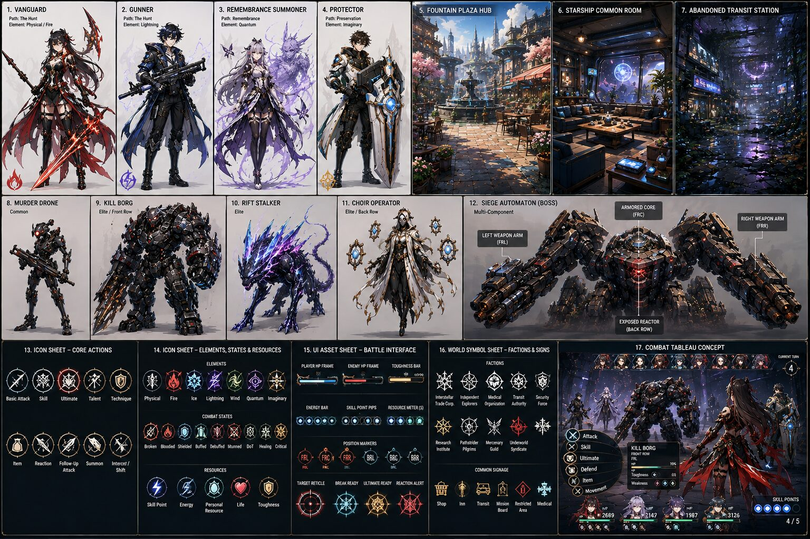
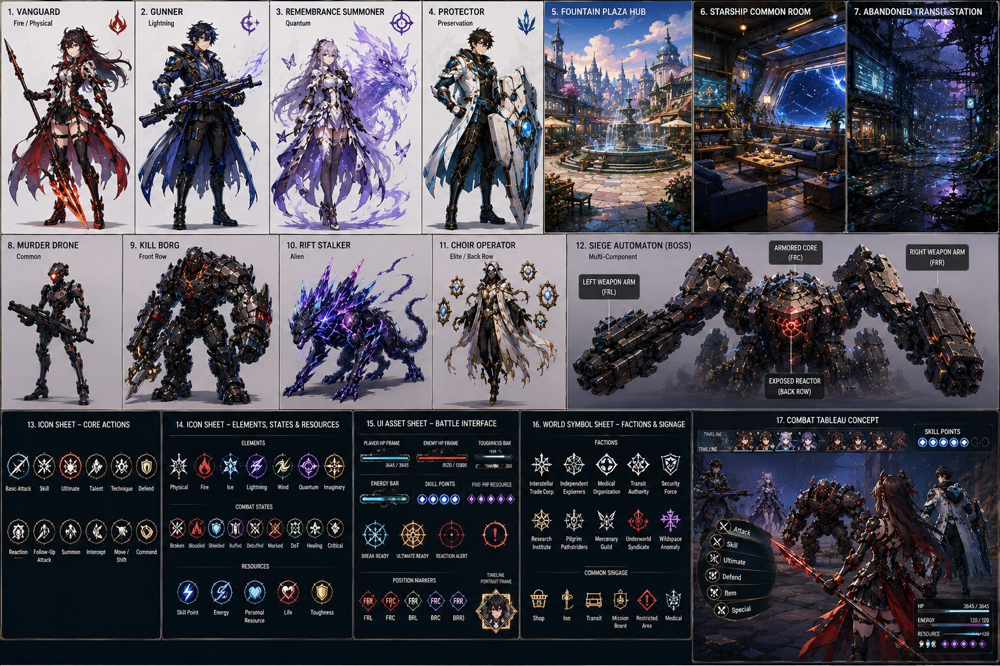
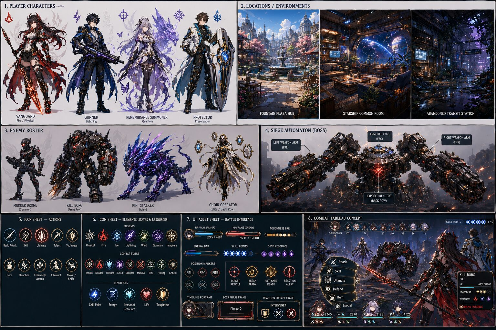
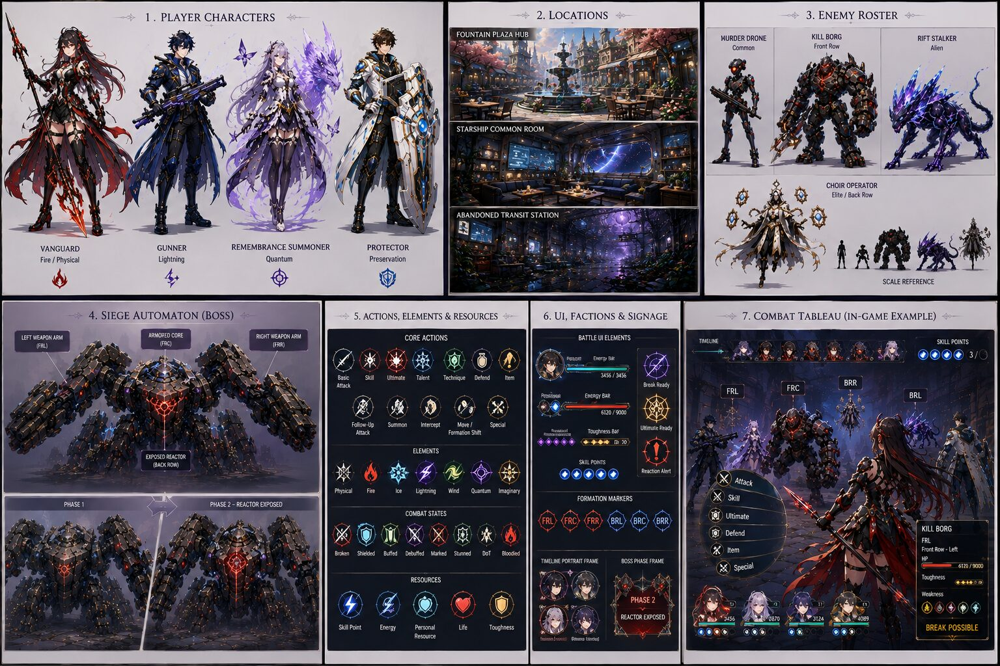
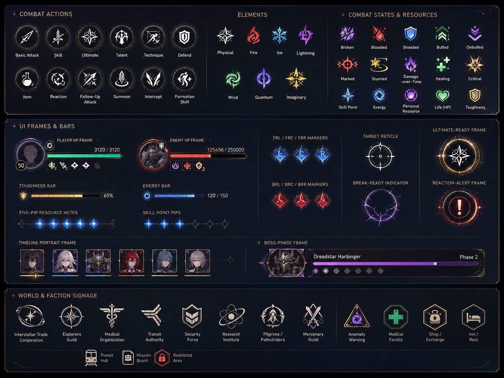